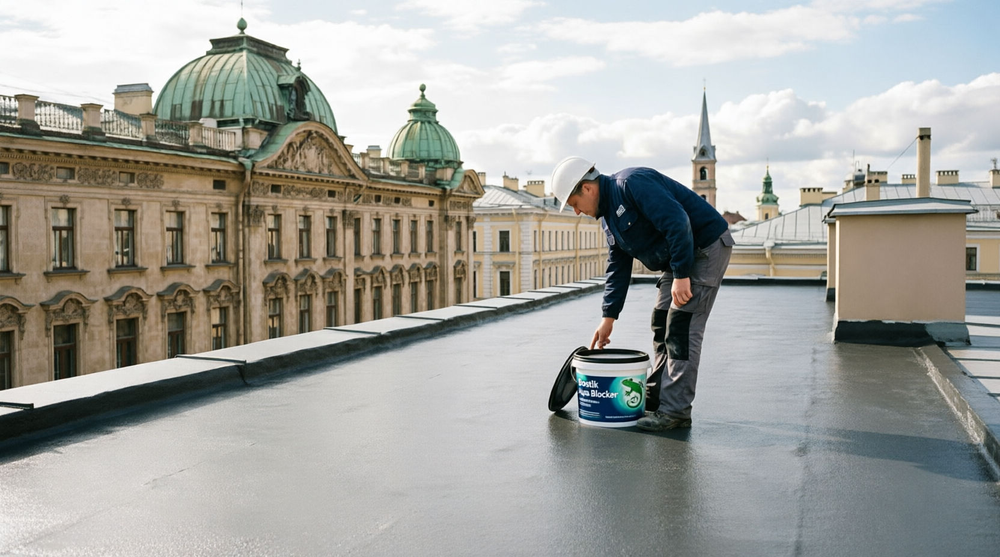

Почему ms-полимер лучше битума и резины
Модифицированные силан-полимеры превосходят по полезным свойствам полиуретан, каучук и силикон, но не имеют их недостатков: они обладают великолепной адгезией к большинству материалов, не разрушаются со временем и устойчивы к механическим воздействиям.
В отличие от мембранных кровель, у которых слабое место — стыки полотнищ и примыкания, и «жидкой резины», требующей нагрева, спецоборудования и подготовленной бригады, Акваблокер создаёт сплошное бесшовное покрытие без огня и техники.
После полимеризации материал образует водонепроницаемое эластичное покрытие, защищает от воды под давлением, влажности грунта и бетоноагрессивных грунтовых вод, а металлические конструкции — ещё и от коррозии.
Акваблокер прошёл все необходимые испытания. Производится материал германским отделением международного концерна Bostik (независимое дочернее предприятие компании Total), а сама технология модифицированных силан-полимеров применяется в строительстве с 1970-х годов.